SpeedCubeInfo
SpeedCubeInfo
SpeedCubeInfo
SpeedCubeInfo
The WCA is the organization responsible for managing competitions, the events there, and each competitor's records. This page is dedicated to providing an overview for each event present at WCA competitions.
Depending on the event, a different round format may be used. They are the following:
Average of 5: Competitors get 5 solves. Then, their best and worst solves are taken off and their average is calculated. If there are 2 or more DNF (Did Not Finish) results, their average is DNF.
Mean of 3: Competitors get 3 solves. Then, their average is calculated. If their is a DNF result, their average is DNF.
Best of X: Competitors get X solves. The best attempt out of these solves is their result. Depending on the event, a different measure is used as the result.
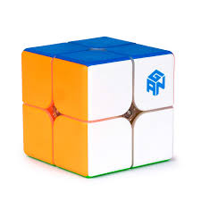
This event uses the 2x2 cube, which consists of just the corners of a standard Rubik's cube. The Average of 5 format is used for this event.
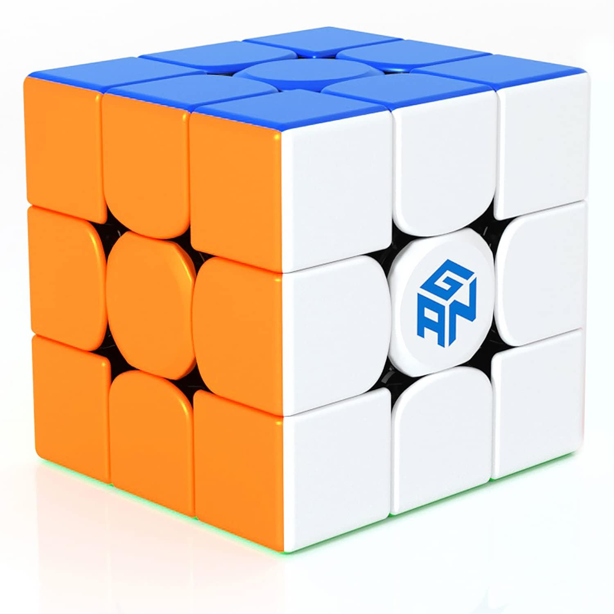
This is the most popular event at competitions. This is due to the significance of the Rubik's cube as a pop culture icon. The Average of 5 format is used.
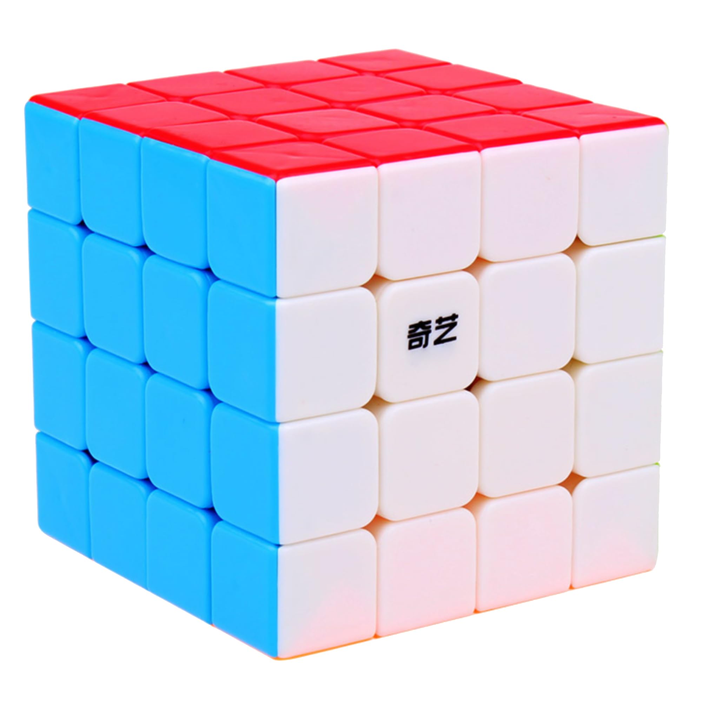
This event uses the 4x4 cube, or as Rubik's calls it, the Rubik's Master. For big cubes (4x4 and up), the solution consists of solving the center pieces, then the edge pieces. The average of 5 format is used for this event.
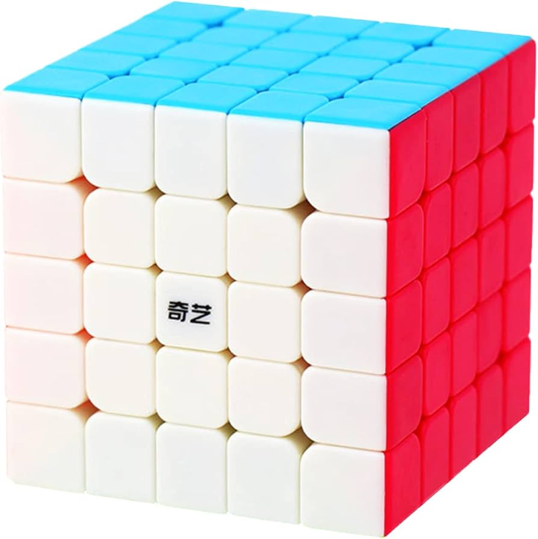
This event uses the 5x5 cube, known by Rubik's as the Professor Cube. The average of 5 format is used for this event.
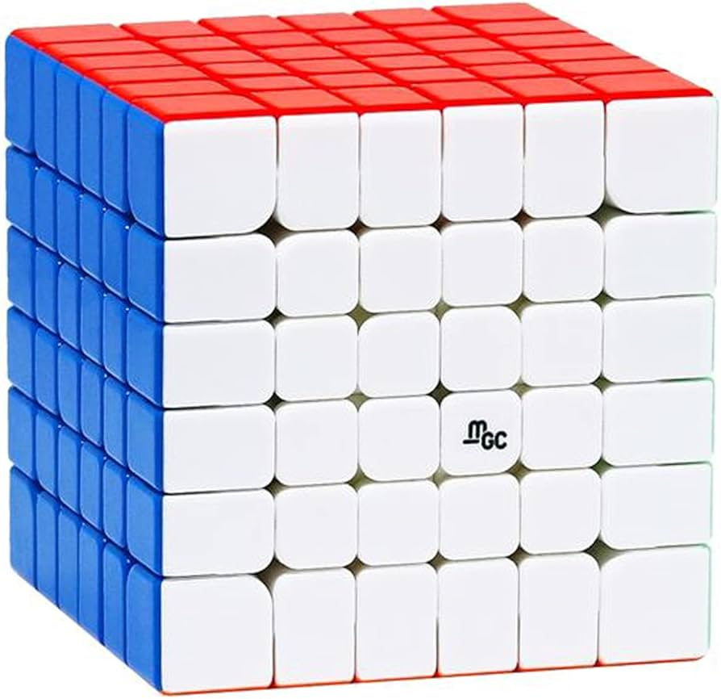
This event uses the 6x6 cube. The Mean of 3 format is used for this event.
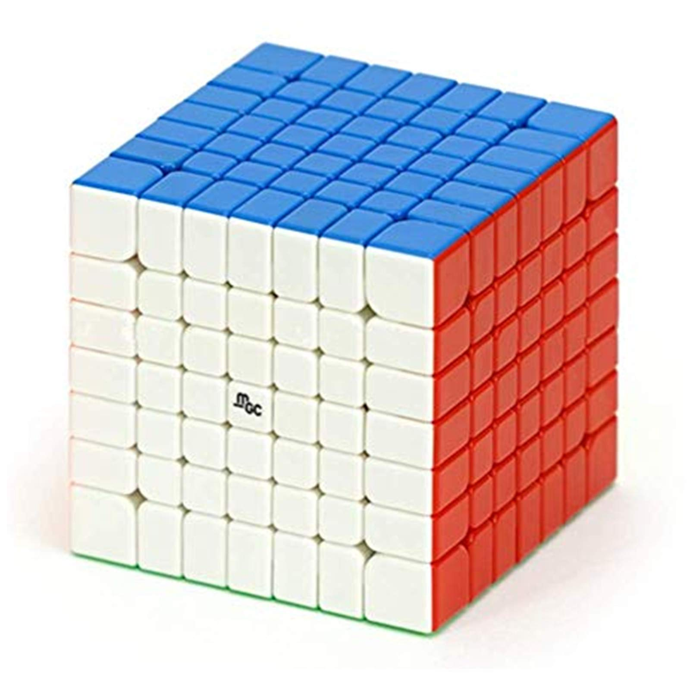
This event uses the 7x7 cube. For stability reasons, the outer pieces of this cube are larger that the center pieces. The Mean of 3 format is used for this event.
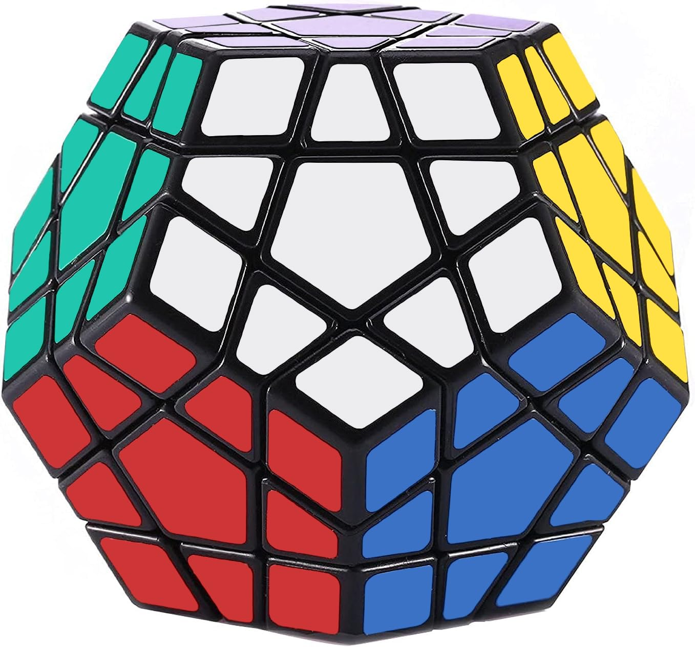
This event uses the Megaminx, a 12-sided puzzle. Despite having 12 sides, the solution process is similar to a 3x3 cube. The Average of 5 format is used for this event.
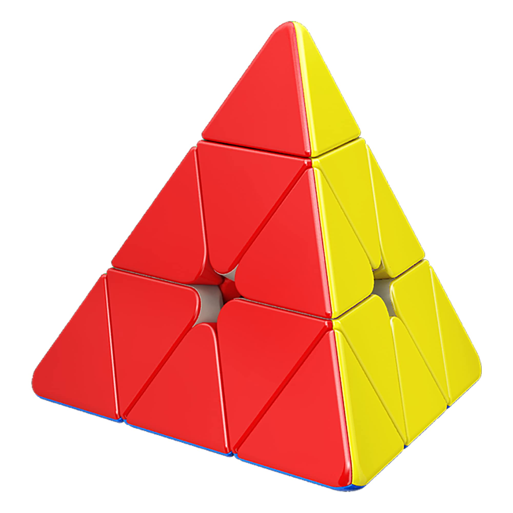
This event uses the Pyraminx, a 4 sided triangular puzzle. The solution process is short, hence how fast the world record is. The Average of 5 format is used for this event.
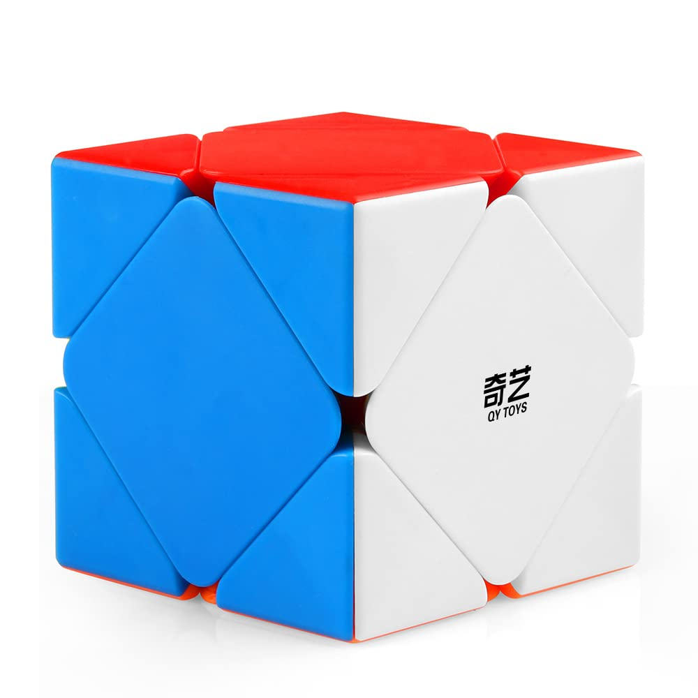
This event uses the Skewb, a puzzle with 6 sides like a standard cube. However, this puzzle is scrambled and solved by turning the corners rather than sides. The Average of 5 format is used for this event.
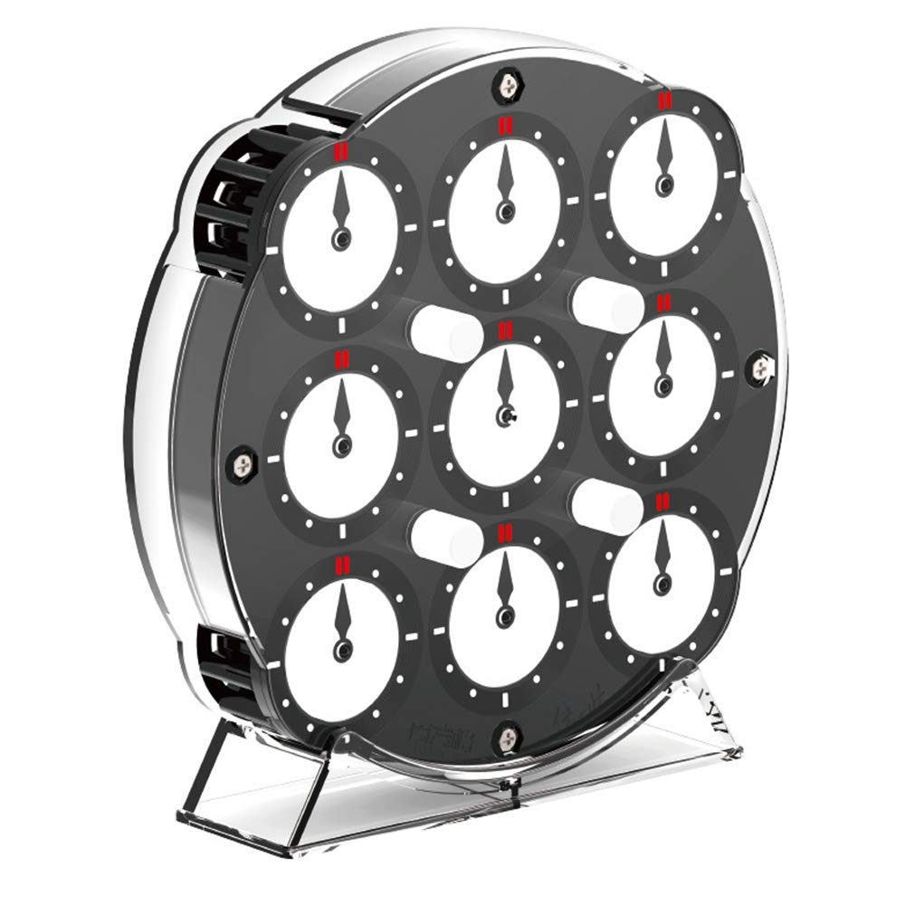
This event uses the Clock, a two sided puzzle with 9 clocks on each side. The way it works is that gears move based on what pins are pushed up or down. These gears control how the 9 clocks on each side work. The goal is to have all the hands on each clock point up on each side. The Average of 5 format is used for this event.
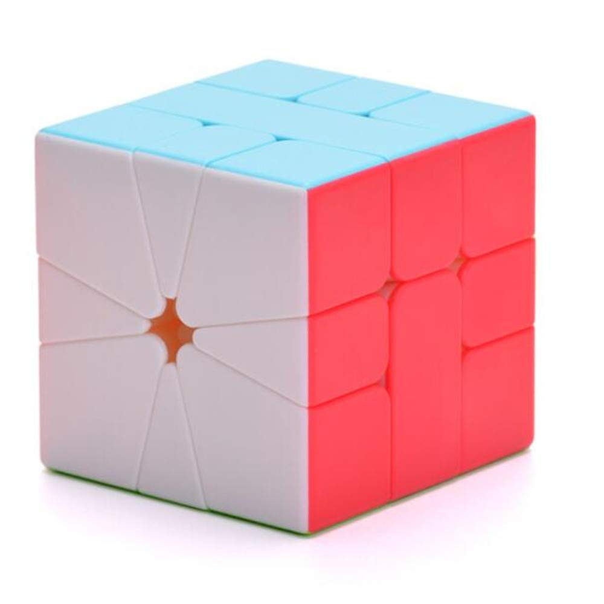
This event uses the Square-1, a cube that looks odd at first glance. The cube is turned by turning one of the sides 180 degrees along one of the lines in the picture. However, this cube does something unusual known as shapeshifting. This means that the cube can take a non-cube shape, pictured below. The Average of 5 format is used for this event.
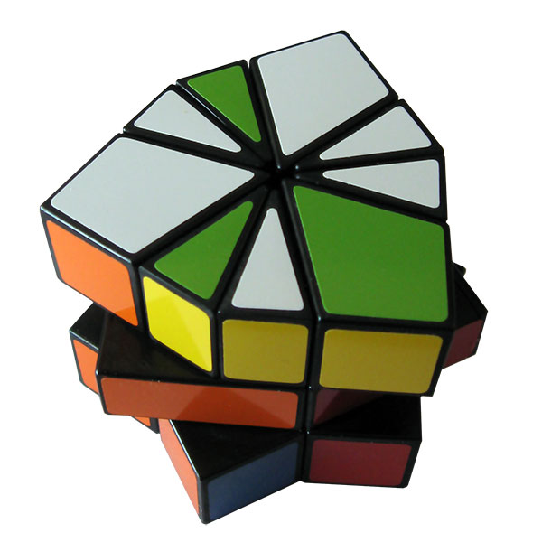
Picture of a scrambled Square-1
These events are what they sound like. Competitors use various methods to memorize the scramble of a cube, and then attempt to solve it. The puzzles used in these events are the 3x3, 4x4, and 5x5 cubes. With the 3x3, there is also the Multi-Blind event, in which competitors memorize many scrambled 3x3s and then attempt to solve them all blindfolded. The 3x3, 4x4, and 5x5 events use the Best of 3 format. The Multi-Blind uses the Best of X format, where the result is how many cubes were successfully solved out of the scrambled ones (solved/total scrambled).
Like the Blindfolded events, this event is what it sounds like. Rather than focus on time, competitors try to solve a 3x3 cube in as little moves as possible. This event uses either the Best of X or Mean of 3 format, where the result is the number of moves used to solve the cube.
This is another event that does a good job explaining what happens in its name. Competitors use only one hand to solve a 3x3 cube. An interesting thing about this event is that competitors typically use their non-dominant hand to solve the cube. This event uses the Average of 5 format.